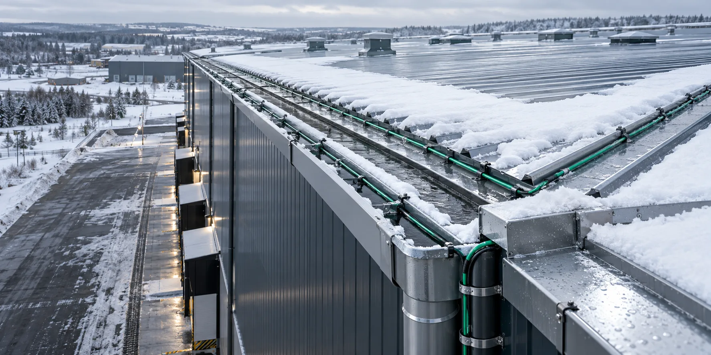
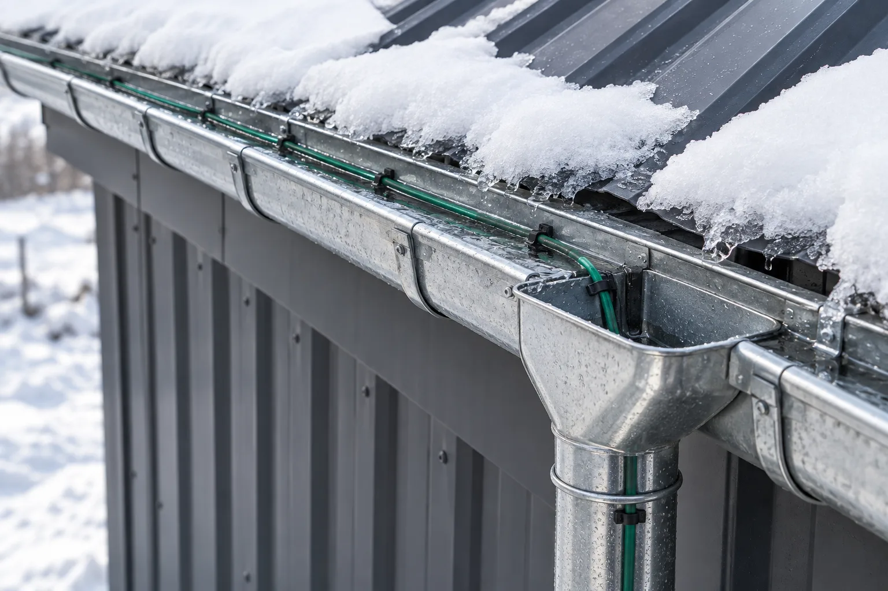
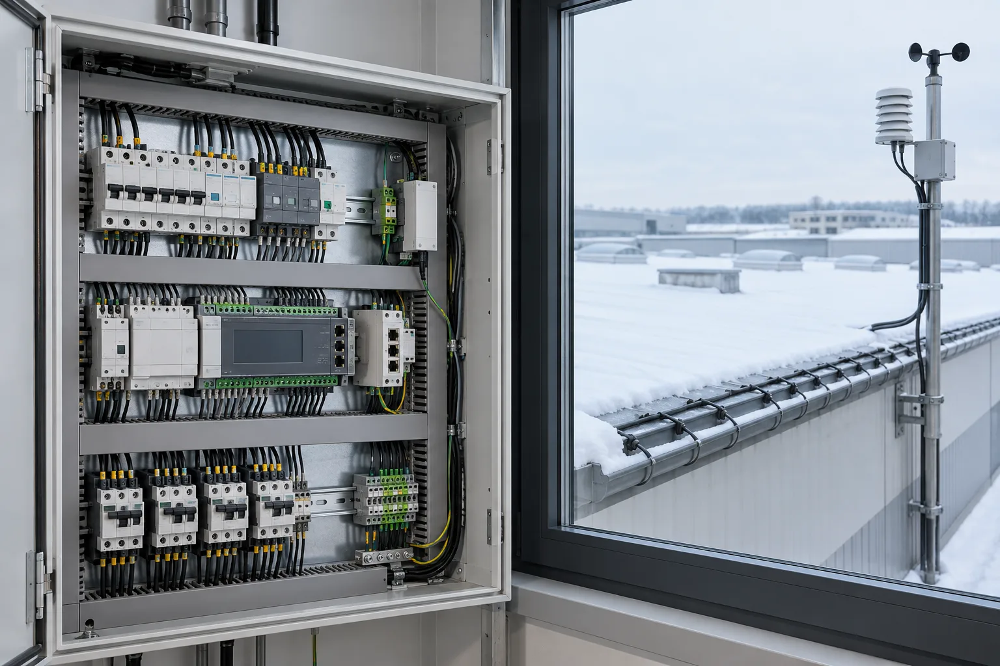
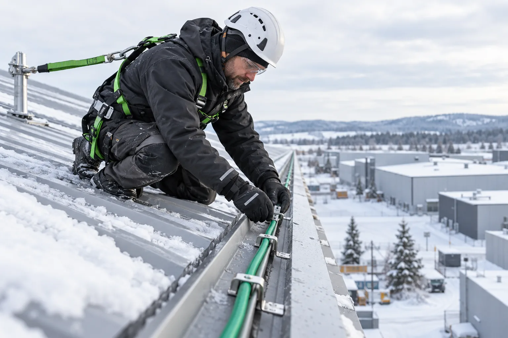

Ледяные пробки
Не даём воде замерзать в желобах и водосточных трубах.

Система антиобледенения под ключ
Защищаем кровлю, желоба, воронки и водосточные трубы от наледи. Обеспечиваем свободный отвод талой воды, снижаем риск образования сосулек, протечек и повреждения водосточной системы.
Обогрев защищает путь отвода талой воды и наиболее проблемные участки промышленной кровли.
Не даём воде замерзать в желобах и водосточных трубах.
Снижаем риск образования опасных ледяных масс.
Защищаем желоба, крепления и воронки от деформации льдом.
Защищаем край кровли и зоны движения талой воды.
Снижаем потребность в регулярных высотных работах.
Система рассчитывается под конструкцию кровли, водостока и условия эксплуатации объекта.

Сохраняем непрерывный путь талой воды от края кровли до выпуска.
Цеха и заводы: карнизы, желоба и водостоки.
Ворота и протяжённые водосточные системы.
Большие площади и сложные узлы примыканий.
ТЭЦ, котельные, подстанции и насосные станции.
Входные группы, терминалы и зоны высокой проходимости.
Медицинские, образовательные, спортивные и культурные здания.

Готовая система для объекта
Подбираем компоненты и схему укладки так, чтобы талая вода проходила весь путь от кровли через желоб и воронку по водосточной трубе.
Проектируем систему под конкретную кровлю и комплектуем как единое инженерное решение.
Учитываем желоба, трубы, тип кровли и климат.
Промышленные системы электрообогрева.
Lavita, OJ Electronics, ТЕРМ, ПЭЛЗ.
Кабель, крепёж, щит, автоматика и датчики.
Схема укладки и спецификация.
Крепление без повреждения покрытия.
Запас востребованного оборудования.
Пусконаладка, обслуживание и ремонт.
От исходных данных до запуска и сервисного обслуживания.
Кровля, водостоки и проблемные зоны.
Планы, фото, материалы и климат.
Длина, мощность и схема раскладки.
Кабель, автоматика, датчики и щит.
Спецификация, стоимость и сроки.
Поставка, монтаж, настройка и сервис.

Конкретные модели, количество зон и мощность определяются инженерным расчётом.
УФ-стойкий экранированный кабель для кровли и водостоков.
Для прямых протяжённых участков и рассчитанных секций.
Управление по температуре, влажности и осадкам.
Защита, коммутация и питание отдельных зон системы.
Исходные данные определяют схему укладки, мощность, автоматику и стоимость.
Кровля, желоба, воронки и трубы рассматриваются как единая система.
Система не справляется с наледью.
Для улицы нужны стойкая оболочка и экран.
Защита может отключать систему в мороз.
Желоб греется, а водосточная труба остаётся холодной.
Попадание влаги приводит к отказу секции.
Перерасход энергии или несвоевременное включение.
Неправильный крепёж может вызвать протечки.
Ограничения кабеля учитываются в проекте.
Расчёт и поставка систем антиобледенения промышленной кровли на основе кабеля Lavita.
Наледь в желобах, водостоках и на кровле.
Кабель RGS-40-2 CR
Производственно-складские комплексы №1, 2, 7 и 8.
RGS-30-2 CR и RGS-40-2 CR
Защита водостоков и края кровли от наледи.
Кабель RGS-40-2 CR
Система антиобледенения на Новорязанской улице.
Кабель RGS-40-2 CR
Инженерный расчёт
Пришлите план или фотографии кровли, размеры желобов и водостоков, регион объекта и доступную электрическую мощность.